library(munch)
library(ggplot2)
library(flextable)
library(gdtools)
font_set_liberation()
#> Font set
#> sans: Liberation Sans [liberation]
#> serif: Liberation Serif [liberation]
#> mono: Liberation Mono [liberation]
#> symbol: Liberation Sans [liberation]
#> 4 HTML dependencies
set_theme(theme_minimal(base_family = "Liberation Sans", base_size = 11))This vignette covers formatting in ‘ggplot2’ theme elements and text annotations using ‘munch’.
Simple markdown with element_md()
element_md() replaces element_text() to
render markdown in titles, subtitles, captions, and axis labels.
ggplot(mtcars, aes(mpg, wt)) +
geom_point() +
labs(
title = "**Fuel Consumption** vs *Weight*",
subtitle = "Data from the `mtcars` dataset",
caption = "Source: *Motor Trend* (1974)"
) +
theme(
plot.title = element_md(size = 16),
plot.subtitle = element_md(size = 12),
plot.caption = element_md(size = 9)
)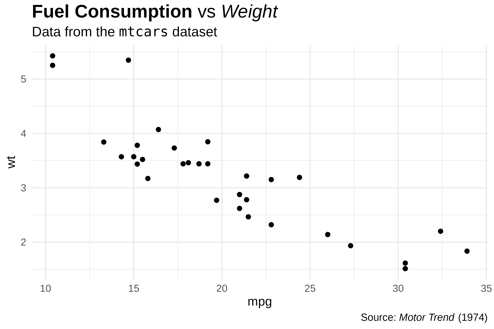
ggplot(mtcars, aes(hp, mpg)) +
geom_point() +
labs(
x = "Horsepower (*hp*)",
y = "Miles per gallon (**mpg**)"
) +
theme(
axis.title.x = element_md(),
axis.title.y = element_md()
)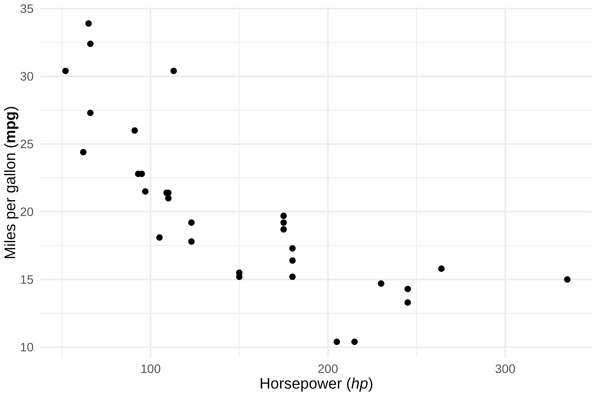
For advanced markdown rendering (images, spans, custom CSS), see also
marquee::element_marquee().
Advanced formatting with element_chunks()
element_chunks() uses ‘flextable’ formatting functions
(as_paragraph(), as_chunk(), etc.) to build
rich text with superscripts, subscripts, colors, and highlighting,
features that markdown does not support.
The as_paragraph() vocabulary
Build text by combining chunks inside
as_paragraph():
| Function | Description | Example |
|---|---|---|
as_chunk() |
Plain text | as_chunk("text") |
as_b() |
Bold | as_b("bold") |
as_i() |
Italic | as_i("italic") |
as_sup() |
Superscript | as_sup("2") |
as_sub() |
Subscript | as_sub("2") |
colorize() |
Colored text | colorize(as_chunk("red"), color = "red") |
as_highlight() |
Highlighted | as_highlight(as_chunk("text"), color = "yellow") |
chunks <- as_paragraph(
as_b("Bold"), as_chunk(", "),
as_i("italic"), as_chunk(", "),
as_chunk("x"), as_sup("2"), as_chunk(", "),
as_chunk("H"), as_sub("2"), as_chunk("O")
)
ggplot(mtcars, aes(mpg, wt)) +
geom_point() +
theme(plot.title = element_chunks(chunks))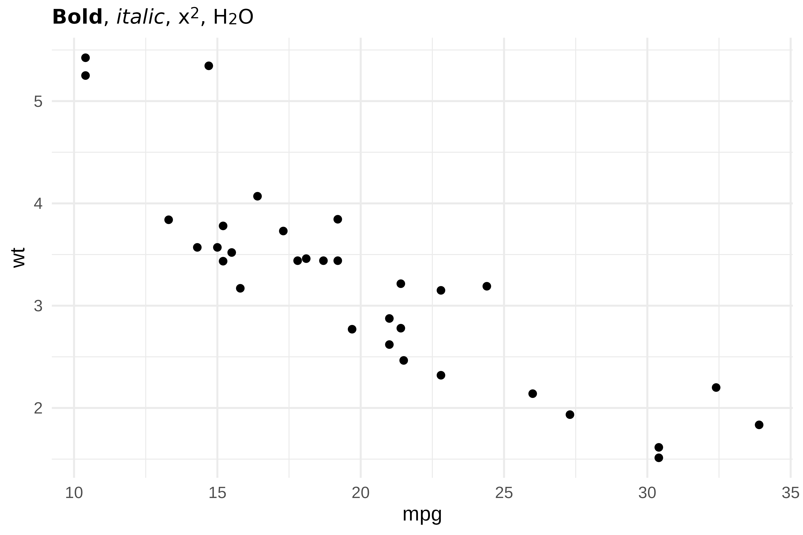
Scientific notation
Superscripts and subscripts are essential for scientific text.
element_chunks() makes them straightforward:
title_chunks <- as_paragraph(
as_chunk("Analysis: "),
as_b("R"), as_sup("2"),
as_chunk(" = 0.87, "),
as_i("p"), as_chunk(" < 0.001")
)
ggplot(mtcars, aes(mpg, wt)) +
geom_point() +
geom_smooth(method = "lm", se = FALSE) +
theme(plot.title = element_chunks(title_chunks))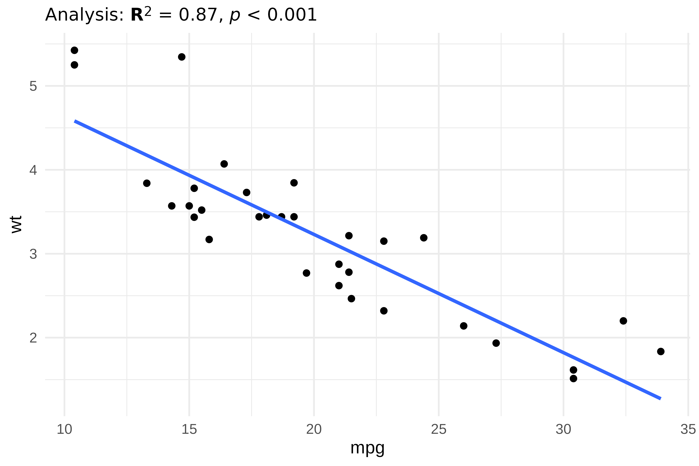
Chemical formulas:
subtitle_chunks <- as_paragraph(
as_chunk("Concentration of "),
as_b("H"), as_sub("2"),
as_b("SO"), as_sub("4"),
as_chunk(" in solution")
)
ggplot(mtcars, aes(mpg, wt)) +
geom_point() +
theme(plot.subtitle = element_chunks(subtitle_chunks))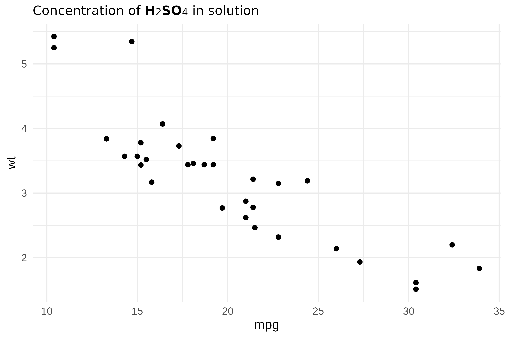
Units with exponents:
caption_chunks <- as_paragraph(
as_chunk("Units: mol\u00B7L"), as_sup("-1"),
as_chunk(" | Speed: m\u00B7s"), as_sup("-2")
)
ggplot(mtcars, aes(mpg, wt)) +
geom_point() +
theme(plot.caption = element_chunks(caption_chunks))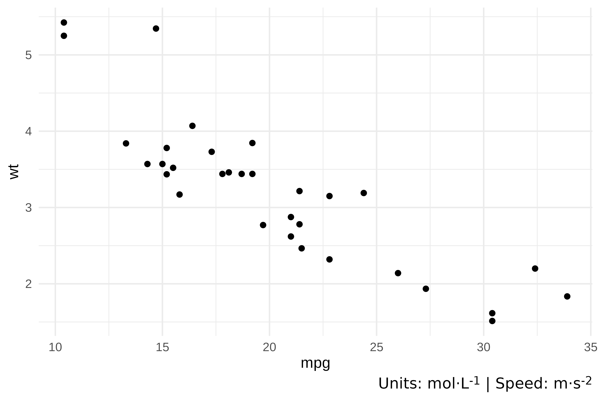
Colors and highlighting
colorize() and as_highlight() add color and
background highlighting:
title_chunks <- as_paragraph(
as_chunk("Results: "),
colorize(as_chunk("significant"), color = "#E63946"),
as_chunk(" difference")
)
subtitle_chunks <- as_paragraph(
as_chunk("Compare "),
as_highlight(as_chunk(" Group A "), color = "yellow"),
as_chunk(" vs "),
as_highlight(as_chunk(" Group B "), color = "cyan")
)
ggplot(mtcars, aes(mpg, wt)) +
geom_point() +
theme(
plot.title = element_chunks(title_chunks),
plot.subtitle = element_chunks(subtitle_chunks)
)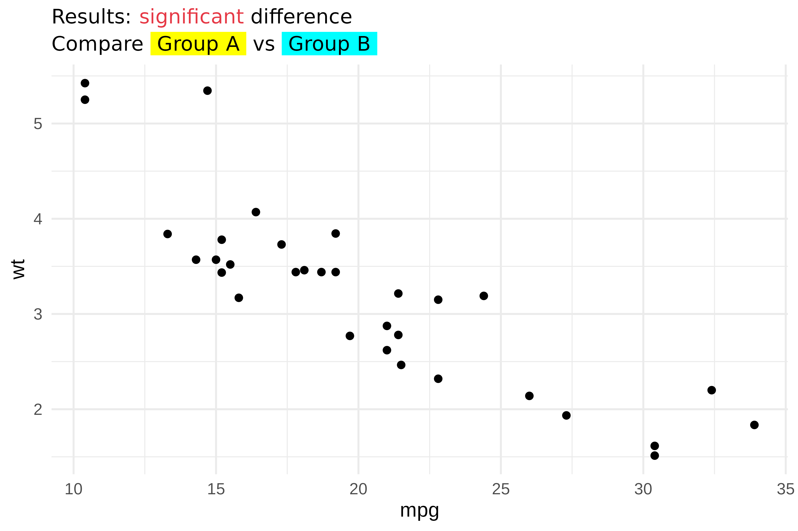
Images in theme elements
as_image() embeds images inside
element_chunks(). This is useful for logos or icons in
titles:
r_logo <- file.path(R.home("doc"), "html", "logo.jpg")
title_chunks <- as_paragraph(
as_image(src = r_logo, width = 0.25, height = 0.2),
as_chunk(" "),
as_b("R Project"),
as_chunk(" - fuel consumption data")
)
ggplot(mtcars, aes(mpg, wt)) +
geom_point() +
theme(plot.title = element_chunks(title_chunks))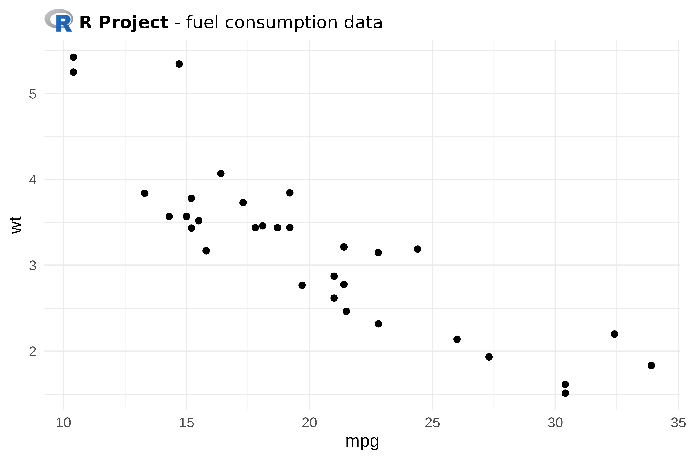
Layout parameters
element_chunks() accepts the same layout parameters as
element_md():
| Parameter | Description |
|---|---|
hjust |
Horizontal justification (0-1) |
vjust |
Vertical justification (0-1) |
angle |
Text rotation angle |
lineheight |
Line height multiplier |
margin |
Margins around text |
chunks <- as_paragraph(
as_chunk("Centered: R"), as_sup("2"),
as_chunk(" = 0.75")
)
ggplot(mtcars, aes(mpg, wt)) +
geom_point() +
theme(plot.title = element_chunks(chunks, hjust = 0.5))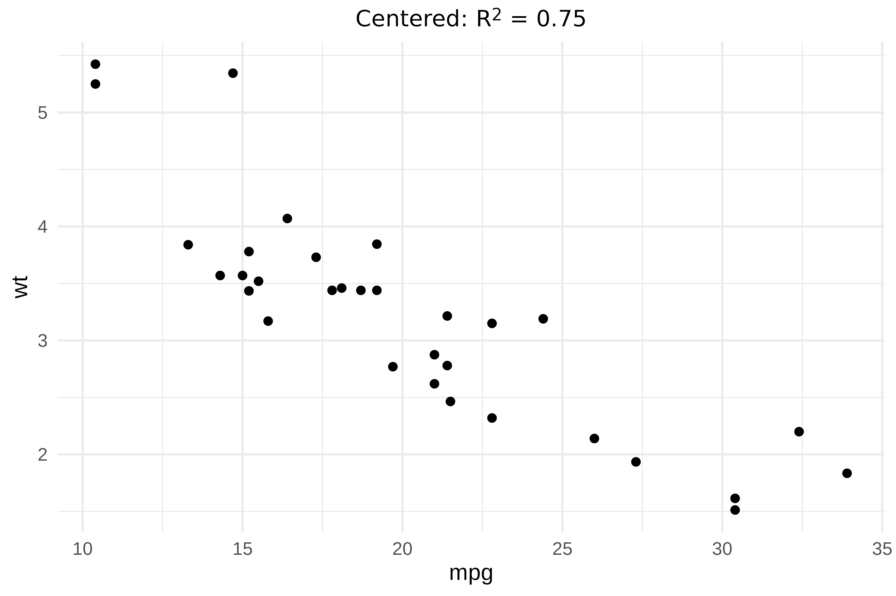
Text annotations with geom_text_md() and geom_label_md()
geom_text_md() and geom_label_md() render
markdown-formatted labels directly on the plot, similar to
geom_text() and geom_label().
annotations <- data.frame(
x = c(15, 25, 30),
y = c(4, 3, 2),
label = c("**Group A**", "*Group B*", "`Group C`")
)
ggplot(mtcars, aes(mpg, wt)) +
geom_point(alpha = 0.5) +
geom_text_md(
data = annotations,
aes(x = x, y = y, label = label),
size = 4
)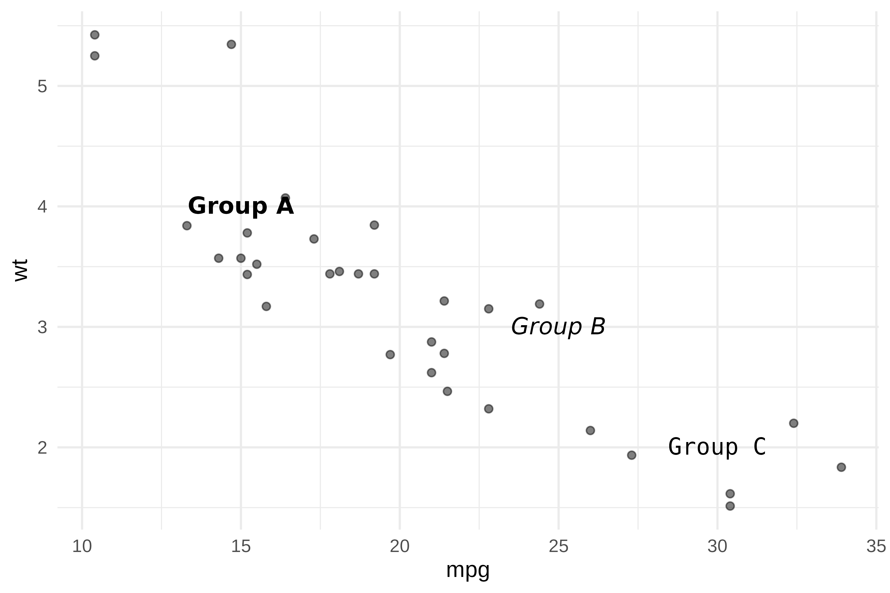
geom_label_md() adds a background rectangle for better
readability:
ggplot(mtcars, aes(mpg, wt)) +
geom_point() +
geom_smooth(method = "lm", se = FALSE) +
geom_label_md(
label = "**R\u00B2 = 0.75**\n\n*p < 0.001*",
x = 28, y = 5,
hjust = 0, vjust = 1,
fill = "white",
label.padding = unit(0.5, "lines")
)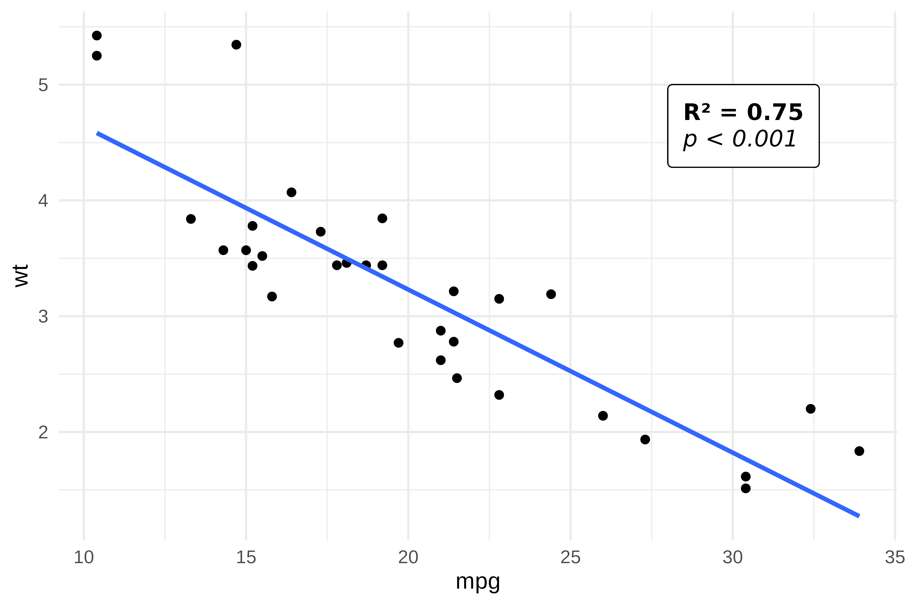
Text wrapping
geom_text_md() and geom_label_md() support
the width parameter (in inches) for automatic line
wrapping:
df <- data.frame(
x = c(15, 30),
y = c(4, 2.5),
label = c(
"This is a **long annotation** that will be *wrapped* automatically when it exceeds the specified `width`.",
"A shorter **note**."
)
)
ggplot(mtcars, aes(mpg, wt)) +
geom_point(alpha = 0.3) +
geom_text_md(
data = df,
aes(x = x, y = y, label = label),
width = 2, hjust = 0, size = 3.5
)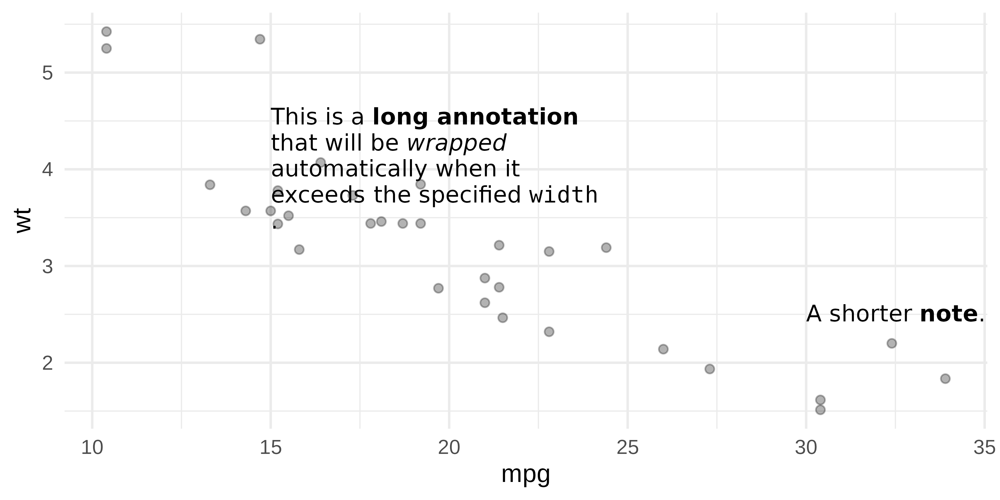
Images in labels
Use markdown image syntax  to embed images in
geom_label_md():
r_logo <- file.path(R.home("doc"), "html", "logo.jpg")
df <- data.frame(
x = 20, y = 4,
label = sprintf("Built with  and **ggplot2**", r_logo)
)
ggplot(mtcars, aes(mpg, wt)) +
geom_point() +
geom_label_md(
data = df,
aes(x = x, y = y, label = label),
fill = "white",
label.padding = unit(0.5, "lines")
)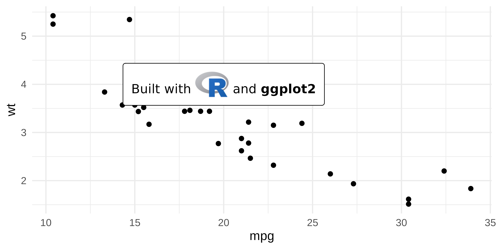
Alignment accuracy
‘munch’ splits text into individually-styled chunks and measures each chunk width separately using ‘gdtools’. The widths are then summed to obtain the total line width. This approach works well in most cases, but it does not produce the same result as a full text shaping engine such as textshaping or systemfonts. Those engines compute the width of a complete string and account for kerning pairs, ligatures, and glyph substitutions between adjacent characters, adjustments that are lost when characters belong to separate chunks. The summed width is close but not exact.
The practical effect depends on the horizontal justification:
-
hjust = 0(left-aligned): unaffected. The left edge is always anchored at x = 0, so any width discrepancy has no visible impact. -
hjust = 0.5(centered): minor. The measurement error is split equally on both sides. -
hjust = 1(right-aligned): most visible. The right edge of successive wrapped lines may not align precisely because each line carries a slightly different measurement error.
For best accuracy, prefer left or center alignment. Right alignment may show slight edge misalignment on multi-line text.
This is a known limitation and work is in progress to reduce the gap.
Choosing the right approach
| Feature | element_md() |
element_chunks() |
geom_*_md() |
|---|---|---|---|
| Bold / Italic |
**text** / *text*
|
as_b() / as_i()
|
**text** / *text*
|
| Inline code | `text` |
x | `text` |
| Superscript | x | as_sup() |
x |
| Subscript | x | as_sub() |
x |
| Colors | x | colorize() |
x |
| Highlighting | x | as_highlight() |
x |
| Use case | Theme elements | Theme elements | Text annotations |
-
element_md(), simple markdown in theme elements (titles, captions, axes). -
element_chunks(), rich formatting with superscripts, subscripts, colors. Uses the same vocabulary as ‘flextable’, making it easy to reuse patterns across plots and tables. -
geom_text_md()/geom_label_md(), markdown annotations placed at specific coordinates on the plot.